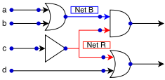
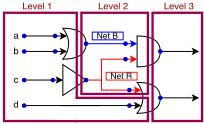
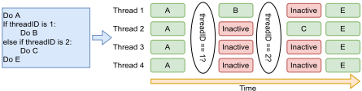
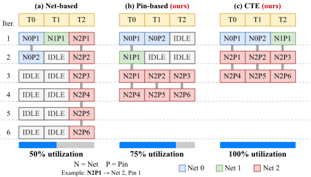
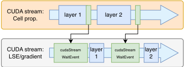
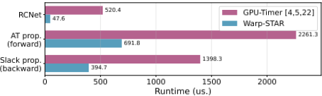
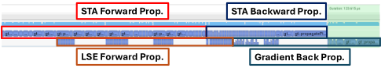

Warp-STAR：通过面向 Warp 的并行编排实现高性能、可微分的 GPU 加速静态时序分析（STA）
静态时序分析（STA）是 EDA 流程的计算瓶颈，时序驱动全局布局（GP）需数百次 STA 调用，而现有 GPU-based STA 引擎将每个 net 映射到单个 CUDA 线程，因各 net 的 pin 数不同造成 intra-warp 负载不均衡、SIMD lane 利用率低下。Warp-STAR 提出 warp 级并行编排：以 pin 为粒度分配负载（pin-based scheme），并辅以基于并行前缀和的 Collaborative Task Engagement（CTE）动态重调度；针对可微分 STA，通过 operation fusion 用两条 CUDA streams 与 CUDA events 将 LSE/梯度计算与 AT/slack 传播重叠执行。在 ICCAD 2015/2025 竞赛数据集上，相对 GPU-Timer 平均加速 2.4X、相对 24 核 CPU 上的 OpenTimer 加速 162X，梯度计算开销从 STA 运行时间的 33% 降至 16%。集成到 Xplace3.0 后相对 DP4.0/INSTA-Place 平均加速 7.1X，且每轮迭代均可执行 STA。对团队而言，这是 GPU 并行 STA 与可微分时序分析的代表进展，对 2.3 域时序方法学与 ML 辅助时序优化有直接参考价值。
STA 是 EDA 流程中的计算瓶颈：时序驱动 GP 等流程需要数百次 STA 调用，DreamPlace 4.0 报告 CPU-based STA 在 250 万 pin 设计中占 GP 阶段总运行时间的 51.3%，只能每 15 次训练迭代调用一次；现有 GPU-based STA 引擎将每个 net 映射到单个 CUDA 线程，由于各 net 的 pin 数不同，warp 内线程迭代次数不一致，在 SIMT lockstep 执行下造成 intra-warp 负载不均衡与 SIMD lane 空闲；此外，可微分 STA 框架在完整 STA 流水线之后才串行执行梯度反向传播，GPU 在同步间隙空闲，显著增加每次迭代成本。
提出 warp 级并行编排的 GPU STA 引擎 Warp-STAR：(1) pin-based scheme——不再按 net 映射线程，而是将 net 内的 pin 分配给 warp 内线程（4 线程处理一个 pin 的 early/late 与 rise/fall 四种时序条件，8 个 pin 组成 32 线程 warp），基于 Elmore delay 模型计算 RC net delay，用 shared memory 与并行归约避免竞争；(2) Collaborative Task Engagement（CTE）——通过 work-efficient 并行前缀和构建统一任务池，配合 binary search（std::lower_bound）在线程块内甚至跨 warp 动态重调度负载；(3) operation fusion——用 LogSumExp（LSE）替代 max 实现可微分 AT 计算，利用 slack 计算本身即含反向传播、梯度可直接由 TNS loss 导出这两点观察，通过两条 CUDA streams 与 CUDA events（cudaStreamWaitEvent）将 LSE/梯度计算与 cell delay/AT/slack 传播重叠执行，免去 PyTorch 式独立 backward 调用；(4) 将引擎集成到时序驱动 GP 框架 Xplace3.0，沿用其 pin/path weighting 方案，每轮布局迭代均调用 STA。
相对 GPU-based STA（GPU-Timer）平均加速 2.4X，相对运行于 24 核 CPU 的 OpenTimer（OT）平均加速 162X（ICCAD 2015 竞赛数据集）
梯度分析开销仅为 STA 引擎运行时间的 33%，经 operation fusion 进一步降至 16%
INSTA 在 aes-cipher_top 上 STA 需 108 ms、梯度计算需 61 ms（约 56% 开销）；Warp-STAR 的 Diff+Fusion 实现了优于 INSTA 的运行时间
集成时序驱动 GP 框架后：相对 DP4.0 与 INSTA-Place 平均加速 7.1X，相对 Efficient TDP 加速 9.7X，相对 Xplace3.0 提升 174%
DP4.0、INSTA-Place、Efficient TDP 受 CPU STA 开销限制只能每 15 次迭代做一次时序分析，Warp-STAR 方案在 GP 每轮迭代均执行 STA
实验环境为 24 核 AMD 7965WX CPU + NVIDIA RTX 4090 GPU（CUDA 11.8），使用 ICCAD 2015 与 2025 竞赛数据集
以往 GPU-based STA（如 GPU-Timer）采用 net-based 映射，将整个 net 交给单个线程处理，本文改为 pin-based 的 warp 级负载分配，直接消除不规则电路图导致的 intra-warp 负载不均衡；在可微分 STA 方面，不同于 INSTA 等在 STA 完成后单独调用 backward 的做法，本文通过 CUDA streams 的 operation fusion 将 LSE/梯度计算与 AT/slack 传播阶段重叠，并论证了独立 forward/backward 分离在此场景下并非必要。
相关度级别：high
命中能力域：2.3 时序与物理实现
理由：论文主题为 STA 引擎的 GPU 并行加速与可微分化，直接命中 2.3 时序与物理实现域的 STA 核心技术。团队在 LPDDR/HBM/UCIe 等 IP 交付中依赖 STA 做 timing closure，虽然日常使用商用 sign-off 工具而非自研 STA 引擎，但论文揭示的 GPU SIMT 负载不均衡问题、warp 级并行编排手法与可微分 STA 的梯度重叠技术，对团队时序分析方法学演进、快速时序迭代以及 ML 辅助时序优化方向具有直接参考价值；其对 GPU 体系结构与 CUDA streams/events 重叠执行的深入分析，对涉及 GPU 加速的内部工具开发亦有借鉴。需注意论文面向 timing-driven GP 场景与学术竞赛 benchmark，并非 sign-off 精度工具。
建议动作：作为方法参考存档
arXiv:2603.28381v1 [cs.DC] 2026年3月30日
静态时序分析（STA）对电子设计自动化（EDA）流程至关重要，但仍然是计算瓶颈。尽管现有的基于 GPU 的 STA 引擎比 CPU 更快，但它们存在效率低下的问题，尤其是由不规则电路图导致的 warp 内负载不均衡。本文提出 Warp-STAR，一种新颖的 GPU 加速 STA 引擎，通过在 warp 层面编排并行计算来消除这种不均衡。该方法相比此前最先进（SoTA）的基于 GPU 的 STA 实现了 2.4 倍加速。当集成到时序驱动的全局布局框架中时，Warp-STAR 相比 SoTA 框架实现了 1.7 倍加速。该方法在可微梯度分析方面也被证明是有效的，且开销极小。
静态时序分析（STA）、GPU 加速、不规则图、warp 内负载不均衡
En-Ming Huang 和 Shih-Hao Hung。2025。Warp-STAR：通过面向 Warp 的并行编排实现高性能、可微分的 GPU 加速静态时序分析。收录于 The Chips to Systems Conference（DAC '26）论文集。ACM，美国纽约州纽约市，7 页。https://doi.org/10.1145/3770743.3803891
静态时序分析（Static Timing Analysis, STA）被广泛应用于 EDA 设计流程的各个阶段，为时序优化与修正提供关键洞察 [1, 7, 14, 15, 19]。例如，时序驱动的全局布局框架 [3, 6, 15, 16, 21] 借助 STA 引擎，在优化半周长线长（half-perimeter wire length, HPWL）等标准指标的同时对单元延迟进行优化。然而，这些框架需要进行数百次 STA 迭代，从而产生显著的运行时开销。时序驱动的全局布局（global placement, GP）框架 DreamPlace 4.0 [15] 报告指出，在一个拥有 250 万个引脚的设计中，基于 CPU 的 STA 引擎 [9] 占据了 GP 阶段总运行时间的 51.3%，因而其调用被限制为每 15 次训练迭代仅执行一次 [15]，这使得 STA 的效率成为一个亟待解决的挑战。
在遵守以下条件的前提下，允许免费制作本作品全部或部分的数字或硬拷贝副本用于个人或课堂用途：副本不得出于牟利或商业优势的目的而制作或分发，且副本首页必须带有本声明及完整的引用信息。本作品中归作者以外的他人所有的组件之版权必须予以尊重。允许注明出处的摘录。除此之外的复制、再出版、上传至服务器或分发至列表，均需事先获得特定许可和/或支付费用。如需申请许可，请联系 permissions@acm.org。
DAC '26，美国加利福尼亚州长滩
© 2025 版权归所有者/作者所有。出版权已授权给 ACM。ACM ISBN XXX-X-XXXX-XXXX-X/2026/07


在本节中，我们介绍静态时序分析（STA）与 GPU 架构的背景知识，以及图处理中 warp 内负载不均衡的问题。
在 STA 中，该问题被建模为有向无环图（DAG），由三个主要组成部分构成：引脚（pin）、单元（cell）和线网（net）。图 1a 展示了这些组成部分。每个门（例如 AND、OR、BUFFER 等）被表示为一个单元，而与单元相关联的蓝点即为引脚，代表它们的输入或输出端口。导线连接由箭头表示。颜色相同的导线（例如红色导线）被归为一个线网。一个线网具有一个输入（驱动）引脚和多个输出引脚，以表示扇出（fanout）。每个单元的信号到达时间（AT）可以通过前向广度优先搜索（BFS）传播来计算，即取其前驱单元的最大 AT，再加上导线延迟和单元自身的延迟。当所有 AT 计算完毕后，便可通过另一次 BFS 操作进行反向传播来推导裕量（slack），即用所需到达时间（RAT）减去计算得到的 AT。
并行计算 STA 的方法通常通过以下四个阶段实现：（1）RC 线网延迟计算：计算每个线网中导线的延迟，可以并行完成。（2）数据依赖关系识别（levelization）：将相互独立的线网归为一组，这对于计算单元 AT 传播至关重要，因为 DAG 中的单元之间存在数据依赖关系。如图 1b 所示，图 1a 中的电路可以被划分为三个线网层级，其中属于第 𝑖 层的引脚需要第 𝑖 - 1 层计算得到的 AT。（3）单元 AT 的前向传播：该阶段逐层计算单元延迟及其 AT，以确保数据正确性。然而，由于同一层内不存在数据依赖关系，层内的计算可以并行执行。（4）单元裕量的反向传播：从相反方向计算单元裕量，从最后一层的输出引脚开始。可以注意到，对于需要多次执行 STA 的流程（例如时序驱动的 GP），阶段（2）只需计算一次，因为设计的网表并未被修改。因此，主要瓶颈在于 RC 线网延迟计算以及前向和反向传播阶段。
由于图结构的不规则性以及 GPU 的单指令多线程（SIMT）执行模型，在 GPU 上高效执行诸如广度优先搜索（BFS）之类的图算法仍然具有挑战性 [8]。在 SIMT 执行模型中，一个 warp 内的线程以锁步方式运行。一组线程最终被映射到一个单指令多数据（SIMD）执行单元上，该单元同时取指并尝试执行同一条指令。然而，由于条件分支或 warp 内的负载不均衡（例如，各线程遍历度数差异巨大的邻居节点），图算法常常表现出控制流分歧。为了在此类分歧期间保持正确性，硬件会采用并维护 SIMT 掩码。这些掩码会禁用与未遵循当前活动执行路径的线程相对应的 SIMD 通道。尽管这确保了正确性，但却严重地导致 SIMD 通道闲置，并无必要地延长了 warp 的整体完成时间。典型的 warp 规模进一步加剧了这一问题：NVIDIA 的 GPU 将线程分组为 32 个线程的 warp，而 AMD 的 CDNA GPU 则使用由 64 个线程组成的 warp。

图 2 展示了一个常见的挑战：在一个包含 4 个线程的 warp 内发生的分支分歧。当同一 warp 内的线程采取不同的执行路径时，这一现象会导致 SIMD 单元利用不足。当各线程在循环中的迭代次数不同时，也会出现类似的低效情况。
为了最大化计算吞吐量并隐藏延迟（例如访存请求），GPU 会在其核心（即流多处理器，stream-multiprocessors）上动态调度多个 warp。当某个 warp 的工作负载完成或陷入停滞时，GPU 调度器可以切换到其他 warp，即使某些 warp 仍在处理耗时的任务。因此，warp 间负载不均衡的严重程度低于 warp 内负载不均衡，因为硬件调度器能够在 warp 之间高效切换以维持高利用率。近期研究已提出诸如图变换 [17]、工作负载重调度 [12, 13] 以及硬件辅助技术 [8, 20] 等方法，以提升通用图算法的 SIMD 通道利用率。这些工作均旨在解决 warp 内负载不均衡问题。
Warp-STAR 提出了两种通过以 warp 为中心的并行化来消除 warp 内低效问题的方法：基于引脚（pin）的方案与协同任务参与（Collaborative Task Engagement, CTE）[12, 13]。与先前采用基于线网（net）方案的基于 GPU 的静态时序分析（STA）引擎 [4, 5, 22] 不同，我们的方法将每个线网的工作负载（即其引脚）分配到多个线程上，以提升 SIMD 通道利用率。
图 3 展示了关键区别：在先前基于 GPU 的 STA 所采用的传统基于线网的方案中，整个线网被映射到单个线程。当某个线网拥有大量引脚时，这可能导致其他线程（或 SIMD 通道）利用不足（例如，如图 3(a) 中线程 2 所示）。相反，我们基于引脚的方案使线程能够以单个引脚为粒度处理工作负载，从而可以并行处理大型线网以缩短执行时间。此外，我们引入了 CTE，它在计算开始前在线程块内动态重新调度工作负载，以实现最大利用率。尽管 CTE 能实现最佳的 SIMD 通道利用率，但它会带来工作负载重新调度的开销，并且与基于引脚的方案相比无法取得最优性能。尽管如此，与基于 GPU 的基线 STA 相比，这两种方法均能提供性能加速，详细比较将在第 4 节中考察。

在本节中，我们首先介绍本工作的并行算法以及处理线程间竞态条件（race condition）的流程。接下来，我们展示用于高效梯度计算的算子融合。最后，我们将 Warp-STAR 融入全局布局（global placement, GP）框架中，以实现高效的时序驱动 GP 优化。
我们的算法将静态时序分析（STA）计算划分为两个主要阶段：（1）线网延迟计算和（2）到达时间（AT）传播。这种划分对性能至关重要，因为线网延迟计算具有高度的可并行性，而由于数据依赖的存在，穿过单元的 AT 传播本质上是串行的，这些数据依赖由分层（levelization）过程加以管理 [4]。首先，我们以 warp 为中心的方式描述 RC 线网延迟计算算法，随后介绍 AT 传播与 slack 计算过程。
3.1.1 RC 线网延迟计算。单条线网的 RC 延迟采用 Elmore 延迟模型进行估计，该模型由公式 1 ∼ 3 [7] 描述：
其中，𝑓 𝑎 ( 𝑢 ) 表示 𝑢 的父引脚，具体而言即其所属线网的输入引脚。这些公式被应用于线网内的每个引脚 ( 𝑢 )，这本身就暴露了由于各线网引脚数量不同而导致的线网间负载不均衡问题。因此，在 Warp-STAR 中，并非将每条线网映射到单独的 CUDA 线程，而是由一个 warp 来处理一条线网的工作负载。请注意，公式 1 中的求和算子表明，父引脚需要
1: CPU: 2: N_blocks ← ⌈ num_nets / NETS_PER_BLOCK ⌉ 3: RCNet_CTE( < NETS_PER_BLOCK, N_blocks > ) 4: GPU: 5: function RCNet_CTE 6: netID ← blockIdx.x · blockDim.x + threadIdx.x; 7: shared int workload_prefix[NETS_PER_BLOCK]; 8: netStart ← netlist_ind[netID]+1; 9: netEnd ← netlist_ind[netID+1]; 10: workload_prefix[threadIdx.x] ← (netEnd - netStart)*4; 11: ⊲ Parallel prefix sum (Work-Efficient Parallel Scan) on work-load_prefix ⊳ 12: . . . 13: total_workloads ← workload_prefix[blockDim.x-1]; 14: ⊲ Calculate ⊳ 15: for taskID = threadIdx.x; taskID < total_workloads; taskID += blockDim.x do 16: taskNetID ← lower_bound(workload_prefix, taskID); 17: taskNetRoot ← netlist_ind[taskNetID]; 18: taskPinID ← (taskID - workload_prefix[taskNetID]) / 4; 19: taskCondID ← (taskID - workload_prefix[taskNetID]) % 4; 20: Do work . . .
net and its workloads (i.e., pins). These workloads are combined to form a unified task pool using a parallel prefix sum operation, which gathers the jobs. The parallel prefix sum operation is based on the work-efficient data-parallel scanning algorithm [2], consisting of two stages: reduce and down-sweep. This method is efficient for scenarios where parallel threads, such as those from different warps, are not perfectly synchronized. Therefore, this allows for workload rescheduling across warps, not just within a single warp, thereby reducing inter-warp load imbalance. Once the workloads are organized into the prefix sum array, computations begin. Each thread retrieves a single task (i.e., a pin) through striding. Subsequently, it calculates its belonging net by performing a binary search on the prefix sum array to find the maximum index, whose value is less than or equal to the task index. This operation is also referred to as the std::lower_bound in the C++ standard library. After the workload is retrieved, the Do work continues to the same RC net delay computation as Line 19 ∼ 36 in Algorithm 1.
3.1.2 Cell arrival time and Slack propagation . The propagation of arrival times (ATs) across cells requires updating the output pin's AT based on the input pins' ATs and the calculated cell delays through LUT interpolations. For each input-to-output path within a cell, we determine the cell arc delay by interpolating values from a look-up table (LUT). The cell's late-mode output AT is then computed by taking the maximum over all input pins of the sum of the input pin's AT and its corresponding cell arc delay. Conversely, the early-mode AT is derived using the minimum.
The calculation of pin and cell slacks is performed by subtracting the AT from the required arrival time (RAT), which is computed via a backward propagation pass, starting from the circuit's primary outputs. Therefore, in Warp-STAR, ATs and slacks are calculated in two distinct stages: a forward pass for ATs and a backward pass for slacks. We apply the same parallelization strategies used in the RC

In traditional STA, the arrival time at a cell's output pin is determined using a maximum operation over the ATs from all input paths. However, it is unsuitable for gradient analysis because only the single largest input value contributes to the maximum, preventing the gradient from being effectively shared among other pins. To overcome this limitation, many works have adopted the LogSumExp (LSE) operation as a differentiable replacement [6, 16], which can be expressed as Equation 4
,where 𝑥 𝑖 represents the values intended for the LSE operation, 𝑐 is the maximum value among the 𝑥 𝑖 values, and 𝛾 is a hyperparameter that controls the smoothness of the output. The term 𝑐 is crucial for preventing floating-point overflow when 𝑒 𝑥 𝑖 / 𝛾 are large enough to exceed the floating point's range.
To obtain gradients, we calculate pin ATs using both the maximum and LSE operations, the former for traditional timing calculations and the latter for differentiable computations. The LSE operations follow the same data dependency relationships as AT propagation, thus leveraging the same levelization results. However, since the LSE operation depends on cell arc delays (derived from LUT interpolations during the AT propagation stage), it must be scheduled after the cell delay for a given level has been computed.
We further propose a tight integration with the original STA through operation fusion , which overlaps slack propagation and gradient computations using CUDA streams. Instead of calculating LSE and gradient after the original STA, which consists of the RC net delay and the AT propagation stages, we demonstrate that it can be performed concurrently with the AT propagation stage. This strategy maximizes GPU's computing throughput and reduces the overhead associated with gradient computations. Our key observation is that separating gradient calculations into distinct forward and backward passes, a common practice when integrating automatic differentiation frameworks like PyTorch (e.g., INSTA [16] requires a manual insta.tns.backward() invocation after the slack calculation) is unnecessary in our context. This is primarily for two reasons: (1) calculating cell slacks inherently involves a backward propagation step within the timing analysis; and (2) most implementations derive the gradient directly from the loss function of total negative slacks. As a result, we enable gradients to be computed directly during the AT and slack propagation phases by meticulously managing data dependencies.
| Design | #Cells | #Nets | #Pins |
|---|---|---|---|
| aes_cipher_top[11] | 9,917 | 10,178 | 37,357 |
| superblue1[14] | 1,209,716 | 1,215,710 | 3,767,494 |
| superblue3[14] | 1,213,252 | 1,224,979 | 3,905,321 |
| superblue4[14] | 795,645 | 802,513 | 2,497,940 |
| superblue5[14] | 1,086,888 | 1,100,825 | 3,246,878 |
| superblue7[14] | 1,931,639 | 1,933,945 | 6,372,094 |
| superblue10[14] | 1,876,103 | 1,898,119 | 5,560,506 |
| superblue16[14] | 981,559 | 999,902 | 3,013,268 |
| superblue18[14] | 768,068 | 771,542 | 2,559,143 |
| Design | #Cells | #Nets | #Pins |
我们创建了两个独立的 CUDA 流：一个专用于 STA 的核心前向传播（即单元延迟与 AT 传播）和反向传播（即裕量计算），另一个用于可微分 LSE（前向）及其相关的梯度计算（反向）。这种架构设计使得两条计算流能够在 GPU 上并发调度。在这种重叠方案中，层级 𝑖 的 LSE 操作必须仅在完成同一层级 𝑖 的单元延迟计算之后执行，因为 LSE 操作需要用到由 LUT 插值得到的单元延迟。因此，我们引入 CUDA 事件来管理这些流之间的同步。图 4 描绘了这种重叠执行方式：CUDA 事件（绿色方块）被插入到单元延迟传播的 CUDA 流中，并在 LSE 与梯度流中使用 cudaStreamWaitEvent 进行同步。这展示了如何通过将 LSE 与梯度计算融合到单元 AT 与裕量传播的过程中来对其进行优化。值得注意的是，我们基于引脚的并行化方案同样适用于该阶段，以最大化并行度和 SIMD 通道利用率。
我们将我们的 GPU 静态时序分析（STA）引擎集成到 Xplace3.0 [3] 中，这是一个由 GPU 驱动的时序驱动全局布局框架；如前几节所述，我们用它替换了其原有的、效率较低的基于 GPU 的 STA 引擎 [4, 5, 22]。我们采用 Xplace3.0 现有的引脚与路径加权方案，该方案基于裕量（slack）对布局进行优化。在该方案中，每个引脚都被赋予一个反映其关键性的权重。由于所有组件都需要裕量信息，STA 引擎必须在每次布局迭代中都被调用，这给大规模设计带来了显著的运行时开销。
在本节中，我们将 Warp-STAR 的性能分别与现有的基于 CPU 和 GPU 的 STA 引擎 OT [9] 和 GPU-Timer [4, 5, 22] 进行对比评估。接下来，我们分析了通过算子融合进行梯度计算的效率，并与基于 GPU 的可微分 STA 引擎 INSTA [16] 进行比较。最后，我们通过将本方法的运行时间和总负裕量（TNS）与 DREAMPlace 4.0（DP4.0）[15]、Efficient TDP [21]、Xplace3.0 [3] 以及 INSTA-Place [16] 进行比较，展示了基于 Warp-STAR 的全局布局（GP）框架的潜力。我们的实验在 24 核 AMD 7965WX CPU 和 NVIDIA RTX 4090 GPU 上进行，CUDA 版本为 11.8。我们使用来自 ICCAD 2015 [14] 和 2025 [11] 的增量式时序驱动 GP 竞赛数据集，其统计信息见表 1。
| Design | OpenTimer (OT) [9] | GPU-Timer [4, 5, 22] | Warp-STAR (Pin-based) | Warp-STAR (CTE) |
|---|---|---|---|---|
| aes_cipher_top superblue1 superblue3 superblue4 superblue5 superblue7 superblue10 superblue16 superblue18 | 89.1 | 4.03 57 61 43 48 71 81 40 38 | 1.49 25 26 17 21 35 34 18 | 3.96 48 51 31 41 50 71 29 |
| 5095 | ||||
| 5165 | ||||
| 3149 | ||||
| 4274 | ||||
| 8811 | ||||
| 7551 | ||||
| 3894 | ||||
| 3407 | 16 | 30 | ||
| Avg. Speedup | 1.48% | 100.00% | 235.97% | 124.18% |
| Design | OpenTimer (OT) [9] | GPU-Timer [4, 5, 22] | Warp-STAR (Pin-based) | Warp-STAR (CTE) |

表 2 展示了 Warp-STAR 与 OT（基于 CPU）及 GPU-Timer 相比的运行时性能。OT 使用全部 24 个 CPU 核心执行，而 Warp-STAR 和 GPU-Timer 均在单个 GPU 上执行。我们的工作提出了两种实现：Warp-STAR（pin-based）和 Warp-STAR（CTE），分别对应第 3 节中描述的两种方法。结果表明，Warp-STAR 相比 GPU-Timer 实现了平均 2.4 倍的加速，相比 OT 实现了 162 倍的加速。性能提升归因于消除了 warp 内负载不均衡，从而使得 GPU 上的 SIMD 通道利用率更高。尽管 Warp-STAR（CTE）在理论上更能减少 warp 内负载不均衡，但它相较于 Warp-STAR（pin-based）并未表现出显著的改进。CTE 方法引入了工作负载重调度与索引所带来的开销——这一局限在 [8] 中也有记载。因此，我们采用 pin-based 方案作为主要实现。
我们进一步在图 5 中针对 aes_cipher_top 测试用例评估了 Warp-STAR 相对于 GPU-Timer 的运行时性能分解。得益于更高的并行度和更高的 SIMD 通道利用率，Warp-STAR 在所有阶段均带来了性能提升。
We evaluate the runtime performance of our gradient computation method, which combines our pin-based scheme with the operation fusion technique. Table 4 presents the runtime performance of gradient computation. The setting 'Diff' refers to the baseline approach where LSE and gradient computations are performed after STA, while 'Diff+Fusion' represents our proposed operation fusion ,
Both lower runtime
and TNS are better.
INSTA-Place uses both
CPU (OT) & GPU (INSTA).
| Design.Design | DP4.0 [15].TNS | DP4.0 [15].Time | INSTA-Place [16].TNS | INSTA-Place [16].Time | Efficient TDP [21].TNS | Efficient TDP [21].Time | Xplace 3.0 [3].TNS | Xplace 3.0 [3].Time | Warp-STAR ( Ours ).TNS | Warp-STAR ( Ours ).Time | Warp-STAR ( Ours ).Time (CTE) |
|---|---|---|---|---|---|---|---|---|---|---|---|
| GPU-based STA | ✗ | ✗ | ✓ 2 | ✓ 2 | ✗ | ✗ | ✓ | ✓ | ✓ | ✓ | ✓ |
| aes_cipher_top superblue1 superblue3 superblue4 superblue5 superblue7 superblue10 superblue16 | -1.9 | 6.3 | - | - | -1.9 | 6.5 | -1.0 | 2.8 | -1.0 | 1.2 | 1.6 |
| -92.3 | 277.0 | -34.6 | >277.0 | -15.9 | 263.8 | -21.8 | 60.9 | -23.7 | 35.4 | 51.1 | |
| -52.9 | 346.2 | -40.4 | >346.0 | -20.0 | 367.4 | -16.9 | 65.2 | -16.8 | 40.8 | 57.7 | |
| -151.5 | 143.1 | -114.5 | >143.0 | -89.8 | 540.7 | -67.6 | 42.3 | -78.0 | 23.5 | 32.2 | |
| -98.5 | 287.0 | -93.7 | >286.0 | -64.4 | 342.0 | -61.7 | 59.0 | -61.6 | 34.3 | 51.4 | |
| -62.1 | 367.0 | -57.6 | >367.0 | -38.3 | 387.5 | -33.2 | 88.5 | -28.9 | 58.9 | 70.4 | |
| -674.8 | 472.1 | -628.2 | >472.0 | -562.3 | 783.3 | -522.8 | 104.9 | -544.3 | 59.2 | 91.5 | |
| -67.3 | 189.2 | -37.6 | >189.0 | -24.7 | 184.1 | -20.5 | 42.6 | -23.5 | 26.3 | 33.0 | |
| superblue18 | -47.3 | 153.6 | -35.8 | >153.0 | -16.0 | 146.4 | -15.2 | 41.8 | -15.1 | 24.3 | 33.4 |
| Ratio | 2.43 | 7.07 | 1.30 | >7.00 | 1.16 | 9.73 | 0.98 | 1.74 | 1.0 | 1.0 | 1.39 |
| Design.Design | DP4.0 [15].TNS | DP4.0 [15].Time | INSTA-Place [16].TNS | INSTA-Place [16].Time | Efficient TDP [21].TNS | Efficient TDP [21].Time | Xplace 3.0 [3].TNS | Xplace 3.0 [3].Time | Warp-STAR ( Ours ).TNS | Warp-STAR ( Ours ).Time | Warp-STAR ( Ours ).Time (CTE) |
| Design | Ours | Ours (Diff) | Ours (Diff+Fusion) |
|---|---|---|---|
| aes_cipher_top | 1.49 | 1.72 | 1.61 |
| superblue1 | 25 | 34 | 29 |
| superblue10 | 34 | 47 | 41 |
| superblue16 | 18 | 23 | 21 |
| superblue18 | 16 | 22 | 19 |
| superblue3 | 26 | 36 | 30 |
| superblue4 | 17 | 22 | 19 |
| superblue5 | 21 | 28 | 24 |
| superblue7 | 35 | 46 | 43 |
| Norm. Time | 100% | 133% | 116% |
| Design | Ours | Ours (Diff) | Ours (Diff+Fusion) |
which enables concurrent execution with the STA engine. With the employment of optimized warp-level parallelism, the overhead of gradient analysis is only 33% of the STA engine's runtime. This overhead is further reduced to 16% with our operation fusion technique. Additionally, we profile the actual execution pattern of gradient computation with operation fusion in Figure 6. The result depicts that the gradient computation is effectively overlapped with the STA engine, which is the primary reason for the reduced runtime.
We also compare our performance against INSTA. For the aes-cipher_top test case, INSTA takes 108 ms for STA and 61 ms for gradient computation, revealing that gradient computation introduces a 56% overhead relative to the STA runtime. While INSTA is designed for high accuracy against industrial sign-off tools and is partially closed-sourced, making a direct runtime comparison challenging, our results serve as reference for the performance improvement achievable through our optimization techniques.
为了展示我们基于 Warp-STAR 的静态时序分析（STA）引擎的潜力，我们将其集成到时序驱动的全局布局（GP）框架 Xplace3.0 [3] 中，该框架实现了标准的 GPU-timer [4, 5, 22]。我们在 ICCAD 2015 和 2025 竞赛基准测试上的实验结果如表 3 所示。在执行时间方面，集成 WarpSTAR 的 GP 框架相比 DP4.0 [15] 和 INSTA-Place [16] 取得了平均 7.1 倍的加速，相比 Efficient TDP [21] 取得了 9.7 倍的加速，相比 Xplace3.0 [3] 取得了 174% 的加速。由于基于 CPU 的 STA 开销巨大，DP4.0、INSTA-Place 和 Efficient TDP 仅能每 15 次迭代执行一次时序分析。相比之下，我们优化后的基于 GPU 的 STA 在 GP 流程的每一次迭代中都会执行。需要注意的是，由于 INSTA-Place 并未开源，我们直接引用其对应论文 [16] 中的总负时序裕量（TNS）结果；此外，由于其依赖于 DREAMPlace 框架，其运行时间高于 DP4.0。这些同时涵盖运行时间性能与 TNS³ 的实验结果表明，Warp-STAR 的优势不仅限于独立的 STA，还证明了其可有效应用于全局布局等其他对性能要求严苛的应用。

在本文中，我们提出了 Warp-STAR，一种基于 GPU 的 STA 引擎，旨在有效解决长期被忽视的 warp 内负载不均衡问题。通过引入基于引脚的方案，Warp-STAR 取得了卓越的性能，相比基于 CPU 的方法平均实现了 162 倍加速，相比基于 GPU 的引擎平均实现了 2.4 倍加速。此外，我们的算子融合技术将梯度计算开销降低至仅为 STA 运行时间的 16%。最后，将 Warp-STAR 集成到时序驱动的全局布局（GP）框架中后，其相比各 SoTA 布局器取得了最佳的运行时间开销，凸显了其在时序驱动设计流程中的广泛适用性与性能优势。